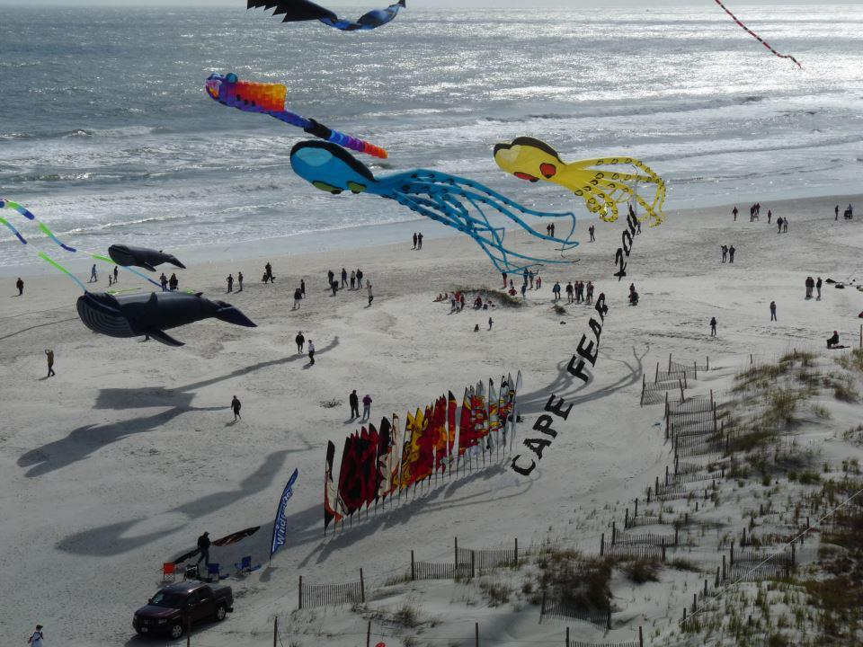
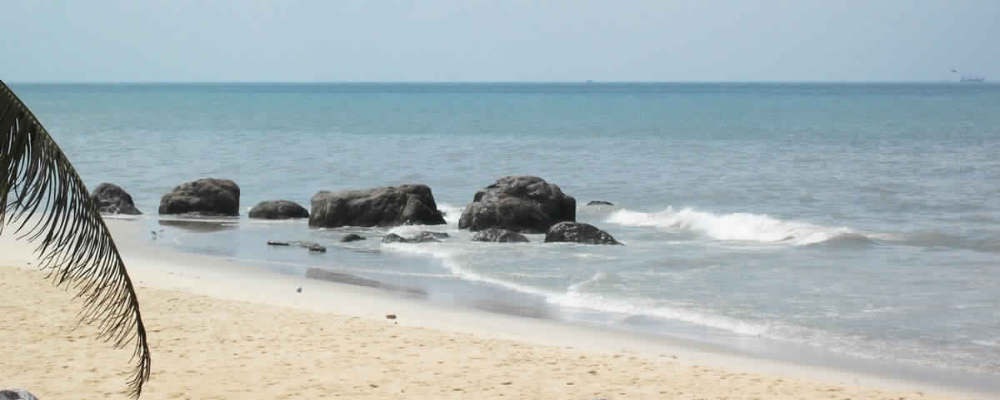
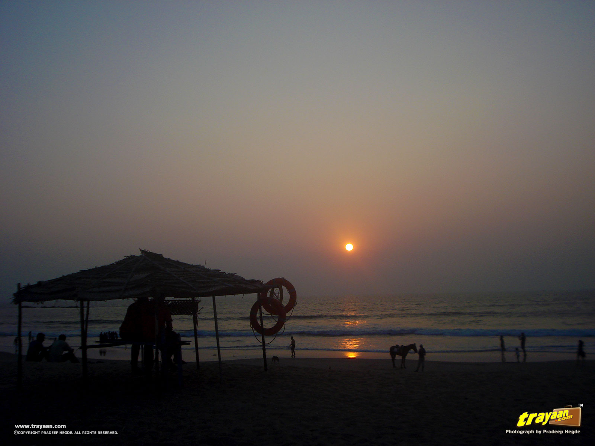
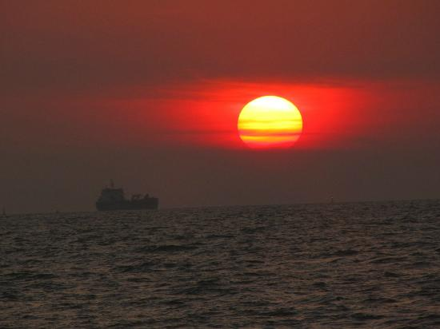

Amazing Beaches In Mangalore

Mangalore is one of the prominent cities in South Canara, Karnataka. Situated in Dakshina Kannada, it is
352 km from Bangalore to Mangalore. There are a number of places to visit in Mangalore and among them
beaches are the main tourist attractions.Nestled between the Arabian Sea and Western Ghats Mangalore �The
Gateway of Karnataka� is the largest city in Dakshina Kannada district and is one of the most cosmopolitan
non-metro cities of India. Mangalore was ranked India�s 13th and Karnataka�s second most favorable
destination for business.
Mangalore Beaches offer so much to explore that it�s hard to fit it all into one family beach vacation. In
fact, you really need to live here to experience everything this popular Coastal City has to offer.
Mangalore Beaches are true family beach destinations, with endless possibilities at every twist and turn,
from the adventure sports to our pristine beaches; you will find something that appeals to everyone.
Ranked as the 8th cleanest city of India, it has some clean and scenic beaches. A visit to these pristine
beaches in Mangalore is enriching for sure.
SASIHITLU BEACH

Sasihithlu
This is a real surfer hotspot, which is suitable for all abilities. A surf centre by the beach supplies you
with equipment and offers various courses.
TANNERBAVI

Tannirabavi
At a distance of Approximately 12 kilometers north from city center you will Discover Mangalore�s most serene
shorelines and is particularly popular with families with children and in summer especially it gets really busy
here.
The calm sands provide the perfect location to relax with the sun, sand, and picturesque Arabian Sea. It�s one
of the quieter spots along the coast, and also one of the widest, providing a beautiful opportunity for morning
jogs and evening strolls against the setting sun.The sunset, which is particularly beautiful here, is a fitting
end to an all-round good day on the beach.
PANAMBUR

Panambur
Situated north of Mangalore along NH -66 approximately 13 kilometers from the city center, according to the
locals this beach is the best beach city has to offer, which is why the beach is so popular with both locals
and tourists.The water sports centre offers a comprehensive range of activities from Jet skiing, banana boat
rides to surfboarding.
Back